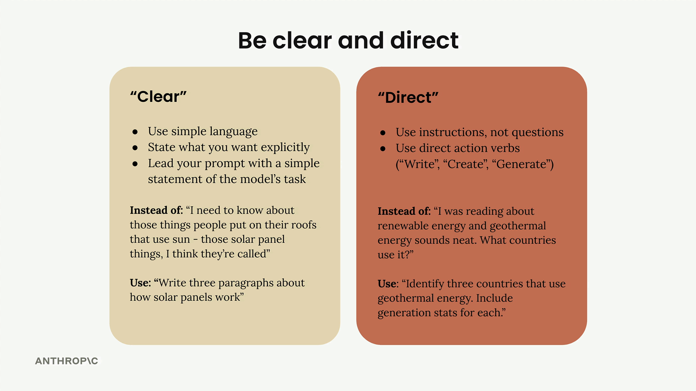

Ясно и прямо
Чему научитесь
Видео 2:05 и текст урока
К концу урока вы сможете:
- объяснить, почему первая строка промпта — самая важная;
- отличить «ясный» промпт от «прямого»;
- переписать вопрос в инструкцию с глаголом действия.
Видео и текст урока.
Смотреть урок на Skilljar Being clear and direct · 2:05Первая строка промпта — самая важная часть всего запроса. Она задаёт рамку для всего, что идёт дальше, и если сформулировать её правильно, результат может заметно улучшиться.
Ясно и прямо
Формулируя эту ключевую первую строку, держитесь двух принципов: ясности и прямоты. То есть простой язык, не оставляющий двусмысленности в том, что Claude должен сделать.

Ясная формулировка
Быть «ясным» значит:
- использовать простой язык, понятный любому;
- говорить ровно то, что вы хотите, не ходя вокруг да около;
- начинать с прямой формулировки задачи для Claude.
Вместо расплывчатого «I need to know about those things people put on their roofs that use sun - those solar panel things, I think they're called» напишите прямо: «Write three paragraphs about how solar panels work.»
Прямые инструкции
Быть «прямым» — про то, как построен запрос:
- давайте инструкции, а не задавайте вопросы;
- начинайте с глагола действия: «Write», «Create», «Generate».
Вместо вопроса «I was reading about renewable energy and geothermal energy sounds neat. What countries use it?» попробуйте: «Identify three countries that use geothermal energy. Include generation stats for each.»
На практике
Посмотрим приём в действии. Начнём со слабого промпта, который просто спрашивал «What should this person eat?», и применим ясный и прямой подход.
Улучшенный вариант: «Generate a one-day meal plan for an athlete that meets their dietary restrictions.»
Такая формулировка сразу сообщает Claude:
- какое действие выполнить (generate);
- что создать (план питания);
- ключевые ограничения (на один день, для спортсмена, с учётом ограничений в питании).
Важен результат
Такая простая правка может сильно повлиять на качество. В нашем примере балл оценки вырос с 2.32 до 3.92 — заметный рост только за счёт переделки первой строки.
Главный вывод: Claude лучше всего отвечает, когда вы обращаетесь с ним как с толковым ассистентом, которому нужно чёткое указание, а не как с тем, кто должен угадывать, чего вы хотите. Начинайте сильно — с глагола действия, конкретно называйте задачу, и результат станет лучше сразу.
Дальше
Следующий приём — конкретика: указания о качестве ответа и шаги, которым должен следовать Claude.
Оригинал урока: Being clear and direct.